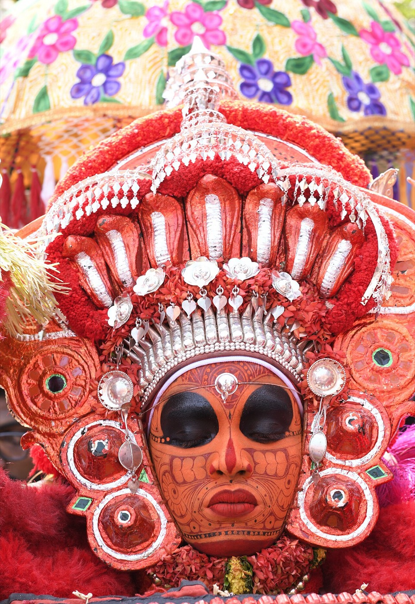

Guided Theyyam tours · North Malabar, Kerala
A living ritual, shared with respect.
Small-group journeys to Kerala’s oldest living ritual, with a local guide who opens doors, explains every step and keeps you welcome.

Powered by letsgoforacamp
Two ways to travel
Join a group or make it yours
Small group departures
Share the journey with up to 8 like-minded travellers. Departure windows are shared when you enquire.
Enquire about a group tripPrivate and customised
Your own dates, pace and interests, for family, friends, a special-interest group or a solo explorer. We design it with you.
Enquire about a custom tripWhy go with us
The ritual is not a show. We help you be a good guest.
Access, arranged
Rituals happen in family shrines and village grounds. We handle introductions and timing so you are welcome, not in the way.
A local guide
Know who the deity is, what the story means, and when to step forward or hold back.
Everything handled
Night rituals and rural roads are hard alone. We run stays, transfers, meals and the late drive home.

New here?
What is Theyyam?
A living ritual of north Kerala where a performer, after hours of painting and dressing, becomes a deity. Hundreds of forms exist, each with its own costume, song and story, kept by the same families for generations.
Read the first-timer’s guideGuided trips
Choose how deep you want to go
Exact rituals are confirmed with you before you pay, because they depend on the day.

Five base towns. One ritual coast.
We stay in comfortable towns and travel out to the rituals each night, so you sleep well and see more.
- Kannur · weavers, beaches, easy transfers
- Thalassery · fort town, food and cricket
- Payyannur & Thaliparamba · the heartland of the ritual
- Kanhangad · the northern gateway
How it works
- 1
Tell us your plan
Month, group size, interests. Two minutes.
- 2
We shape the trip
A proposal in two working days.
- 3
We confirm rituals
Closer to travel, we lock the best nights.
- 4
You arrive, we host
Guide, driver and stay are ready.


“[TRAVELLER TESTIMONIAL: one sentence on what the guide made possible]”
[Name], [Country] · The Heritage Journey
Questions, answered
When is the Theyyam season?
The main season runs from late October to May. We suggest the best weeks when you enquire.
Can I just turn up on my own?
Some rituals are open, but many are family occasions and timings are hard to know. A guide gets you in respectfully.
Is it suitable for children and elders?
Yes, with planning. Rituals run late and involve standing, so we adjust pace and seating.
Can I take photos or video?
Not always. Many shrines ban photography and video, some during the whole ritual. Your guide tells you the rules at each place, and we suggest you simply watch.
Ready to meet the gods of Malabar?
Tell us when you can travel. We reply within two working days.
Enquire about a trip